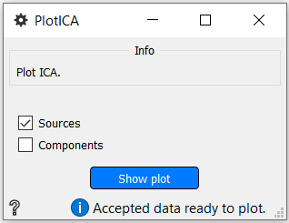
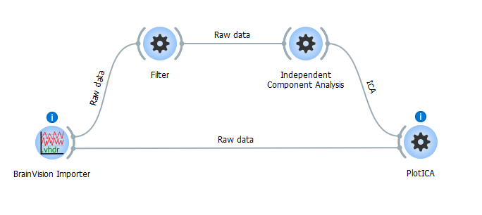

PlotICA
Plot the Independent Component Analysis.
Inputs
and
- ICA: Object of Independent Component Analysis
Use

- Sources - If this check box is checked, the Sources plot will be displayed after pressing Show plot.
- Components - If this check box is checked, the Components plot will be displayed after pressing Show plot.
- Show plot button - Button for showing plots.
Example

More information about plot sources, plot components and ICA. Information about all process here.